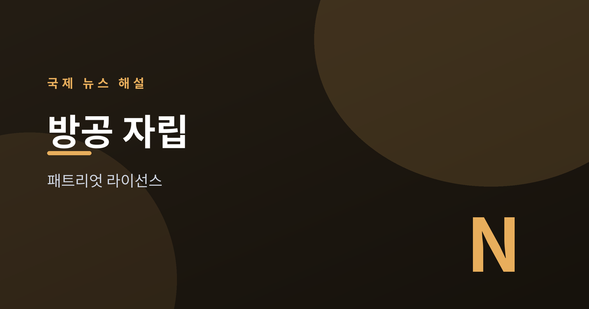
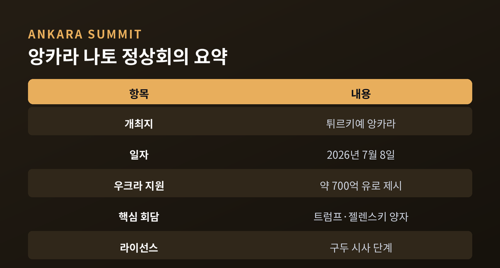
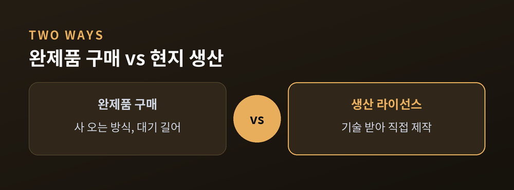
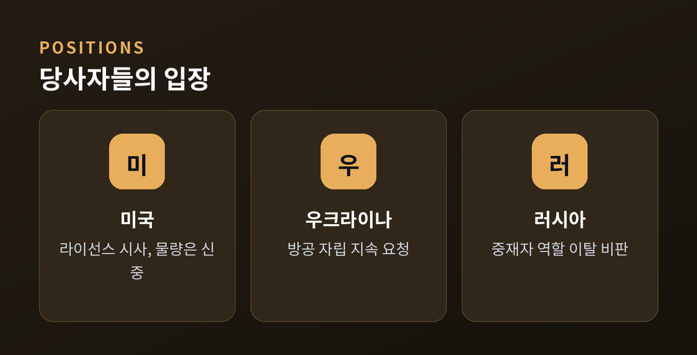
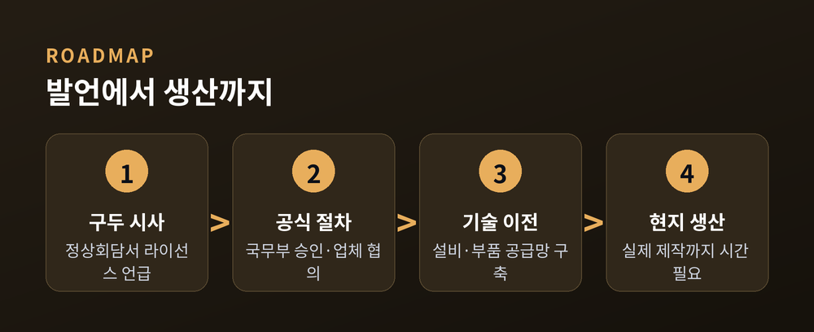

패트리엇 생산 라이선스의 의미

2026년 7월 8일 튀르키예 앙카라에서 나토 정상회의가 열렸습니다.
회의 곁에서 트럼프 미국 대통령과 젤렌스키 우크라이나 대통령이 양자회담을 했습니다.
이 자리에서 나온 '패트리엇 생산 라이선스' 발언이 국제사회의 주목을 받았습니다.
나토 32개 회원국은 앙카라 정상회의에서 공동선언을 채택했습니다.
로이터·AP 등 외신에 따르면 2026년 우크라이나 지원 규모로 약 700억 유로가 제시됐습니다.
핵심 장면은 트럼프·젤렌스키 회담이었습니다.
트럼프 대통령은 젤렌스키 대통령에게 "당신들이 직접 패트리엇을 만들 수 있게 라이선스를 주겠다"는 취지로 말했습니다.
"직접 만들라"는 표현도 함께 나왔다고 외신은 전했습니다.
타임·디펜스뉴스 등은 이를 "생산 허가 시사"로 보도했습니다.
젤렌스키 대통령은 회담에 앞서 패트리엇 생산량이 부족하다고 밝혀 왔습니다.
우크라이나가 직접 생산할 수 있도록 나토 회원국들이 미국을 설득해 달라고 요청하기도 했습니다.
다만 확정된 공식 합의는 아니라는 점을 짚어둘 필요가 있습니다.
뉴욕타임스(NYT) 등은 국무부의 정식 승인, 방산업체와의 협의, 기술 이전 등 절차가 남았다고 보도했습니다.
일부 외신은 해당 시스템을 만드는 기업들이 아직 이 결정을 통보받지 못했다고 전했습니다.
그런 만큼 현재 단계는 '공식 합의'보다 '구두 시사'에 가깝게 읽힙니다.

패트리엇은 항공기와 미사일을 요격하는 지대공 방공체계입니다.
값이 비싸고 수요가 몰려 완제품 확보에 시간이 오래 걸립니다.
'생산 라이선스'는 완제품을 사 오는 대신, 기술을 받아 현지에서 직접 만드는 방식입니다.
공급을 외부에 의존하지 않고 방공 물량을 스스로 조달하는 '자립' 쪽으로 한 걸음 옮기는 의미가 있습니다.
전선의 수요에 맞춰 요격미사일을 꾸준히 채워 넣을 수 있느냐가 방공의 관건이기 때문입니다.
이례적인 이유는 그동안 미국이 이 권한을 제한적으로만 허용해 왔기 때문입니다.
정밀 방공 기술은 민감한 군사 자산이어서, 완제품을 파는 것과 만드는 법을 넘겨주는 것은 무게가 다릅니다.
그래서 미국은 이전부터 이 권한의 이전에 신중한 편이었습니다.
외신은 독일·일본에 이어 우크라이나가 세 번째 사례가 될 수 있다고 전했습니다.
다만 어느 나라에 어떤 조건으로 허용하느냐는 사안마다 다르다는 점도 함께 봐야 합니다.

이번 발언은 전쟁이 장기화하는 국면에서 나왔습니다.
우크라이나는 러시아의 미사일·드론 공격에 맞설 방공 자산을 지속적으로 요청해 왔습니다.
동시에 나토 내부에서는 방위비 증액과 자체 생산능력 확충이 화두로 떠올랐습니다.
미국의 역할을 둘러싼 논의도 이어졌습니다.
트럼프 대통령은 "우리도 패트리엇이 많지 않아 우리 몫이 필요하다"며 신중한 태도도 함께 보였습니다.
러시아 측 반응도 있었습니다.
외신에 따르면 라브로프 외무장관은 미국이 '공정한 중재자' 역할에서 멀어지고 있다고 비판했습니다.
러시아 국영매체는 트럼프 대통령의 발언을 사실 위주로 짧게 전한 것으로 알려졌습니다.
이처럼 같은 사안을 두고 당사자마다 해석이 엇갈립니다.

핵심 변수는 '시사'가 '공식 절차'로 이어지느냐입니다.
라이선스가 실제 승인되고 기술 이전과 생산 라인 구축까지 가려면 상당한 시간이 필요합니다.
방산업체 협의와 부품 공급망, 비용 분담 문제도 남아 있습니다.
전쟁 국면과 협상 흐름에 따라 속도와 범위가 달라질 수 있습니다.
지원 규모와 방위비를 둘러싼 나토 회원국 사이의 조율도 변수입니다.
러시아의 대응과 국제 여론이 어떻게 움직이는지도 함께 지켜봐야 합니다.
발언 하나가 방향을 가리킬 수는 있어도, 현실이 되는 데는 여러 관문이 남아 있습니다.

정리하면, 앙카라 나토 정상회의의 패트리엇 라이선스 발언은 방공 자립이라는 상징적 이정표를 담고 있습니다.
다만 현재까지는 구두 시사 단계이며, 공식 절차와 변수가 남아 있습니다.
당사자들의 입장이 엇갈리는 만큼, 어느 편도 옹호하지 않고 이후 진행을 지켜볼 필요가 있습니다.